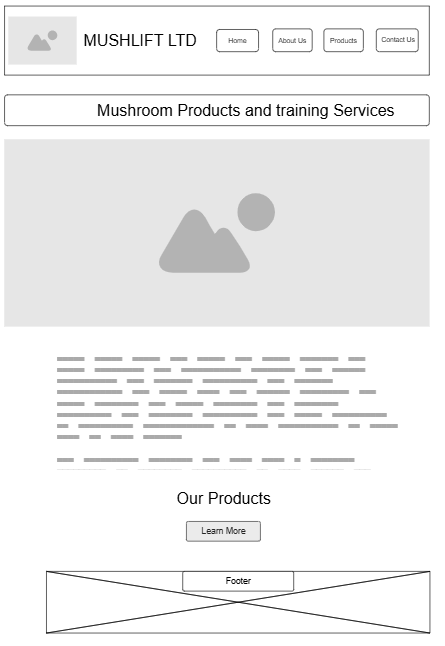

Mushroom Products and Training Services
MUSHLIFT LTD – This name reflects our mission to "lift" communities through sustainable mushroom farming and value-added mushroom products. It is short, memorable, and directly tied to our brand identity.
Optional Domain Availability: mushlift.com / mushlift.rw
The website will serve as an informational and promotional platform for MUSHLIFT LTD, showcasing our fresh mushrooms, mushroom powder, mushroom substrate for farmers, and our training services in mushroom cultivation. It will provide details about our products, our mission to promote sustainable agriculture, and how to get in touch with us.
The colors are chosen to represent freshness, sustainability, and agriculture.
Mobile View:
Desktop View:
Note: Wireframes show the layout structure only. Final design will use selected colors, fonts, and images.